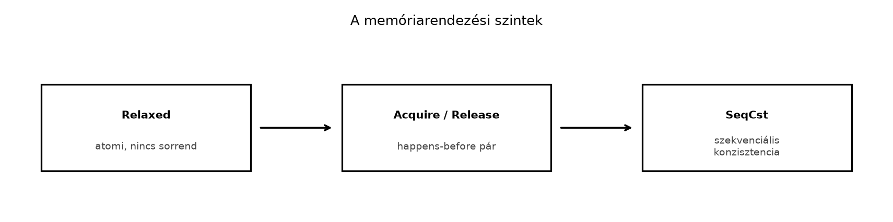

C++-ban a std::atomic<T> és a
std::memory_order évek óta ismerős, mégis a legtöbb kódban
memory_order_seq_cst marad, mert „az a legerősebb”. Ez
sokszor fölöslegesen drága, máskor pedig a relaxed
használata vezet finom, csak ritkán jelentkező adatversenyhez. A Rust
ugyanazt a memóriamodellt használja, mint a C++20, de az atomikus
típusai a biztonságos Rust részei: a fetch_add és a
load nem igényel unsafe blokkot. Ez nem
jelenti azt, hogy a memóriarendezés kérdése eltűnik; a
Ordering érték kiválasztása ugyanúgy tervezési döntés, mint
C++-ban.
Definíció (atomikus típus). Az
AtomicBool, AtomicUsize,
AtomicU64 és hasonló típusok olyan, belsőleg szinkronizált
értékek, amelyeken az egyes műveletek megszakíthatatlanul hajtódnak
végre, és a fordító a megadott Ordering korlátai szerint
rendezheti át őket más memóriaműveletekkel. A Rustban ezek a
std::sync::atomic modulban élnek.
Definíció (happens-before). Ha egy
Release rendezésű tárolás szinkronizál egy
Acquire rendezésű betöltéssel ugyanazon az atomikus
objektumon, akkor a tárolás előtt végrehajtott összes írás
happens-before a betöltés utáni összes olvasáshoz képest. A
happens-before reláció tranzitív, és ez teremti meg a több szál közötti
megfigyelhető sorrendet.
Szabály. A Rust memóriamodell a C++20 memóriamodellt
követi. A std::sync::atomic::Ordering értékei a
következőképpen felelnek meg a C++ std::memory_order
értékeinek:
Rust Ordering |
C++ memory_order |
Alkalmazható műveletek | Garancia |
|---|---|---|---|
Relaxed |
memory_order_relaxed |
bármely | atomikusság, nincs sorrendi korlát |
Acquire |
memory_order_acquire |
load |
a load utáni műveletek nem mozognak elé |
Release |
memory_order_release |
store |
a store előtti műveletek nem mozognak mögé |
AcqRel |
memory_order_acq_rel |
fetch_add, compare_exchange stb. |
Release és Acquire együtt |
SeqCst |
memory_order_seq_cst |
bármely | szekvenciális konzisztencia |
A C++ memory_order_consume megfelelője a stabil Rustban
nincs; a C++-ban is kerülendő, mert a szemantikája a gyakorlatban
bizonytalan.

A fenti ábra a három gyakorlatban használt rendezési szintet mutatja.
A Relaxed csak azt garantálja, hogy a művelet atomikus,
tehát például egy számláló növelése nem veszíti el a másik szál által
ugyanabban a pillanatban elvégzett növelést. Az
Acquire/Release pár már sorrendet teremt a
tárolás előtti és a betöltés utáni műveletek között. A
SeqCst minden szál számára egyetlen közös sorrendet állít
fel, és ezért a legkönnyebben érvelhető, de gyakran fölöslegesen
erős.
Szabály. Atomikus számlálóhoz, ahol csak a végső
érték számít, a Relaxed rendezés elegendő. Ha az atomikus
érték egy másik, nem atomikus adat láthatóságát jelzi,
Release tárolást és Acquire betöltést kell
párosítani.
A legegyszerűbb atomikus számláló C++-ban:
#include <atomic>
#include <thread>
#include <cassert>
std::atomic<int> counter{0};
void increment(int n) {
for (int i = 0; i < n; ++i) {
counter.fetch_add(1, std::memory_order_relaxed);
}
}
int main() {
std::thread t1(increment, 10'000);
std::thread t2(increment, 10'000);
t1.join();
t2.join();
assert(counter.load(std::memory_order_relaxed) == 20'000);
}A Rust megfelelő:
use std::sync::atomic::{AtomicUsize, Ordering};
use std::thread;
fn main() {
let counter = AtomicUsize::new(0);
thread::scope(|s| {
s.spawn(|| {
for _ in 0..10_000 {
counter.fetch_add(1, Ordering::Relaxed);
}
});
s.spawn(|| {
for _ in 0..10_000 {
counter.fetch_add(1, Ordering::Relaxed);
}
});
});
assert_eq!(counter.load(Ordering::Relaxed), 20_000);
}A különbség itt nem a memóriamodell, hanem a nyelvi környezet. A Rust
atomic műveletei biztonságosak, míg C++-ban az
std::atomic használatával a programozó felel azért, hogy
minden memóriaműveletet a megfelelő szinkronizáció védjen. A
thread::scope a Rust-ban garantálja, hogy a szálak a scope
végére befejeződnek, ezért nem kell join() hívás; a C++-ban
a std::jthread hasonló célt szolgál.
A Relaxed rendezés önmagában nem teremt
happens-before-t, ezért nem elegendő egy másik adat láthatóságának
jelzésére. A következő kód lefordul, de a Relaxed rendezésű
ready zászló miatt a payload értéke nem
garantáltan 42:
use std::sync::atomic::{AtomicBool, AtomicUsize, Ordering};
use std::thread;
fn main() {
let ready = AtomicBool::new(false);
let payload = AtomicUsize::new(0);
thread::scope(|s| {
s.spawn(|| {
payload.store(42, Ordering::Relaxed);
ready.store(true, Ordering::Relaxed); // helytelen: Relaxed zászló
});
s.spawn(|| {
while !ready.load(Ordering::Relaxed) {
std::hint::spin_loop();
}
// Nem garantált, hogy a payload 42 látszik.
assert_eq!(payload.load(Ordering::Relaxed), 42);
});
});
}A hiba oka: a ready Relaxed tárolása és betöltése nem
hoz létre happens-before-t, így a payload Relaxed írása a
másik szál szerint a ready betöltése után is
végrehajtódhat. A javítás:
use std::sync::atomic::{AtomicBool, AtomicUsize, Ordering};
use std::thread;
fn main() {
let ready = AtomicBool::new(false);
let payload = AtomicUsize::new(0);
thread::scope(|s| {
s.spawn(|| {
payload.store(42, Ordering::Relaxed);
ready.store(true, Ordering::Release); // Release
});
s.spawn(|| {
while !ready.load(Ordering::Acquire) { // Acquire
std::hint::spin_loop();
}
// Most már garantált: a Release-Acquire pár miatt
// a payload.store happens-before a payload.load előtt.
assert_eq!(payload.load(Ordering::Relaxed), 42);
});
});
}Itt a ready Release tárolása szinkronizál az Acquire
betöltéssel, ezért az író szál payload.store-ja
happens-before az olvasó szál payload.load-jához képest. A
payload maga maradhat Relaxed, mert a sorrendet a zászló
garantálja.
A compare_exchange művelet akkor hasznos, ha egy
atomikus értéket csak akkor akarunk megváltoztatni, ha az aktuális
értéke egyezik egy elvárt értékkel. Például egyszeri inicializálás
jelzője:
use std::sync::atomic::{AtomicBool, Ordering};
fn main() {
let initialized = AtomicBool::new(false);
let mut current = initialized.load(Ordering::Acquire);
loop {
if current {
break;
}
match initialized.compare_exchange_weak(
current,
true,
Ordering::AcqRel,
Ordering::Acquire,
) {
Ok(_) => {
println!("Ez a szál inicializál.");
break;
}
Err(observed) => current = observed,
}
}
}A compare_exchange_weak az Ok ágon
megváltoztatja az értéket, ha az még a várt current; az
Err ágon visszaadja az aktuális értéket, és a ciklus
újrapróbálja. A gyenge változat néha akkor is hibázhat, ha az érték
egyezik, ezért mindig ciklusban kell használni.
Munkakönyvtár: ~/rust-labor/rkv
Az rkv szervernek hamarosan szüksége lesz műveleti statisztikákra,
például arra, hogy hány GET, SET,
DEL és LIST parancs érkezett. A
Mutex túlzás lenne egyetlen számlálóhoz; atomikus
típusokkal a Stats típus Sync lesz, és a
Store metódusai a mutexen belül is olcsón frissíthetik.
rkv-core/src/stats.rs fájlt:use std::sync::atomic::{AtomicU64, Ordering};
#[derive(Debug, Default)]
pub struct Stats {
get_count: AtomicU64,
set_count: AtomicU64,
delete_count: AtomicU64,
list_count: AtomicU64,
}
impl Stats {
pub(crate) fn record_get(&self) {
self.get_count.fetch_add(1, Ordering::Relaxed);
}
pub(crate) fn record_set(&self) {
self.set_count.fetch_add(1, Ordering::Relaxed);
}
pub(crate) fn record_delete(&self) {
self.delete_count.fetch_add(1, Ordering::Relaxed);
}
pub(crate) fn record_list(&self) {
self.list_count.fetch_add(1, Ordering::Relaxed);
}
pub fn get_count(&self) -> u64 {
self.get_count.load(Ordering::Relaxed)
}
pub fn set_count(&self) -> u64 {
self.set_count.load(Ordering::Relaxed)
}
pub fn delete_count(&self) -> u64 {
self.delete_count.load(Ordering::Relaxed)
}
pub fn list_count(&self) -> u64 {
self.list_count.load(Ordering::Relaxed)
}
}Itt a Relaxed rendezés elegendő, mert a számlálók
önmagukban atomikusak, és nincs más adat, amelynek a láthatóságát a
számlálóval kellene szinkronizálni.
rkv-core/src/lib.rs-ben:mod stats;
pub use stats::Stats;Store-hoz a stats mezőt. Ha a
Store típus az rkv-core-ban van definiálva, a
módosítás a következőképpen nézhet ki:use std::collections::HashMap;
use std::sync::Arc;
pub struct Store {
data: HashMap<String, Vec<u8>>,
stats: Arc<Stats>,
}
impl Store {
pub fn new() -> Self {
Self {
data: HashMap::new(),
stats: Arc::new(Stats::default()),
}
}
pub fn stats(&self) -> &Stats {
self.stats.as_ref()
}
pub fn get(&self, key: &str) -> Option<&Vec<u8>> {
self.stats.record_get();
self.data.get(key)
}
pub fn set(&mut self, key: String, value: Vec<u8>) {
self.stats.record_set();
self.data.insert(key, value);
}
pub fn delete(&mut self, key: &str) -> Option<Vec<u8>> {
self.stats.record_delete();
self.data.remove(key)
}
pub fn list(&self, prefix: Option<&str>) -> Vec<String> {
self.stats.record_list();
self.data
.keys()
.filter(|key| prefix.map_or(true, |p| key.starts_with(p)))
.cloned()
.collect()
}
}A Stats Arc-ban van, mert a
Store így akár klónozhatóvá is tehető, de a jelenlegi
megosztás a Arc<Store>-on keresztül is működik. A
stats() getter a későbbi naplózó és lekérdező réteg számára
biztosítja a hozzáférést.
cd ~/rust-labor/rkv
cargo test -p rkv-coreVárt kimenet: a meglévő tesztek mellett az új statisztikai
viselkedést ellenőrző teszt is zöld. Ha nincs ilyen teszt, add hozzá az
rkv-core/src/lib.rs #[cfg(test)]
moduljához:
#[test]
fn stats_count_operations() {
let mut store = Store::new();
store.set("a".to_string(), vec![1]);
store.get("a");
store.delete("a");
store.list(None);
assert_eq!(store.stats().set_count(), 1);
assert_eq!(store.stats().get_count(), 1);
assert_eq!(store.stats().delete_count(), 1);
assert_eq!(store.stats().list_count(), 1);
}Továbbvitt eredmény. Az itt bevezetett
Stats típus atomikus számlálókkal (get_count,
set_count, delete_count,
list_count) készül. Ezt a típust fogja használni a Naplózás és megfigyelhetőség: tracing alfejezet a
műveleti metrikák kiírásához, és az Unsafe Rust:
szuperképességek és felelősség alfejezetben is hivatkozunk rá,
amikor az atomikus műveletek és a biztonsági határok közötti kapcsolatot
vizsgáljuk.
Minden atomikus műveletet SeqCst-tel
írni. A SeqCst a legerősebb rendezés, és a legtöbb
platformon drágább, mint a Relaxed vagy az
Acquire/Release. Ha csak egy számlálót
növelsz, a Relaxed elég; ha zászlóval szinkronizálsz, a
Release/Acquire pár a megfelelő.
Relaxed használata függő adatokhoz.
Amikor egy atomikus zászló jelzi, hogy egy másik, nem atomikus adat
készen áll, a zászlón Release tárolást és
Acquire betöltést kell használni. A
Relaxed-del a másik adat olvasása adatversenyhez
vezethet.
Atomikusokkal kiváltani a Mutex-et összetett
invariánsoknál. Ha egy invariáns több mezőt vagy objektumot
érint, a Mutex sokkal egyszerűbb és gyakran nem is lassabb.
Az atomikus típusok akkor jók, ha az állapot egyetlen, jól elkülöníthető
érték.
A compare_exchange hibás újrapróbálási
ciklusa. A compare_exchange_weak esetén a
current változót frissíteni kell az Err ágon,
különben a következő próba ugyanazzal az elavult értékkel dolgozik.
Ordering-et
választanál egy olyan atomikus számlálóhoz, amelyet csak
teljesítménymetrikák gyűjtésére használsz, és miért?std::atomic<int> példát írd át idiomatikus Rustra
úgy, hogy a szálak thread::scope-ot használjanak, és a
számláló Relaxed rendezéssel növekedjen.Stats típust az rkv-core/src/stats.rs fájlban,
add a Store-hoz, és frissítsd a set,
get, delete, list metódusokat a
számlálók növelésére. Írj tesztet is.ready
zászló Relaxed, és a payload atomikus
Relaxed tárolása és betöltése nem látszik garantáltan.
Javítsd úgy, hogy a payload értéke mindig helyesen látható
legyen, és indokold, miért elegendő a payload-t
Relaxed-nek hagyni.use std::sync::atomic::{AtomicBool, AtomicUsize, Ordering};
use std::thread;
fn main() {
let ready = AtomicBool::new(false);
let payload = AtomicUsize::new(0);
thread::scope(|s| {
s.spawn(|| {
payload.store(99, Ordering::Relaxed);
ready.store(true, Ordering::Relaxed);
});
s.spawn(|| {
while !ready.load(Ordering::Relaxed) {
std::hint::spin_loop();
}
assert_eq!(payload.load(Ordering::Relaxed), 99);
});
});
}A Relaxed rendezést érdemes választani, mert a
számláló önmagában atomikus, és nem szinkronizál más adatokat. A
Relaxed csak a megszakíthatatlan növelést garantálja, ami a
metrika pontos összegéhez elég; a sorrendi korlátok hiánya itt nem
jelent hibát.
A Rust változat:
use std::sync::atomic::{AtomicUsize, Ordering};
use std::thread;
fn main() {
let counter = AtomicUsize::new(0);
thread::scope(|s| {
s.spawn(|| {
for _ in 0..10_000 {
counter.fetch_add(1, Ordering::Relaxed);
}
});
s.spawn(|| {
for _ in 0..10_000 {
counter.fetch_add(1, Ordering::Relaxed);
}
});
});
assert_eq!(counter.load(Ordering::Relaxed), 20_000);
}A thread::scope biztosítja, hogy a closure-ökből a
counter kölcsönözhető legyen 'static nélkül,
és a scope végére mindkét szál befejeződik.
A labor szakaszban bemutatott Stats típus és
Store módosítás a megoldás. A Stats mezői
AtomicU64 típust használnak, a record_*
metódusok fetch_add-dal növelnek, a getterek
load-dal olvasnak. A Store::stats() visszaadja
a &Stats-ot. A teszt ellenőrzi, hogy a műveletek
számlálói pontosan növekednek.
A javított kód:
use std::sync::atomic::{AtomicBool, AtomicUsize, Ordering};
use std::thread;
fn main() {
let ready = AtomicBool::new(false);
let payload = AtomicUsize::new(0);
thread::scope(|s| {
s.spawn(|| {
payload.store(99, Ordering::Relaxed);
ready.store(true, Ordering::Release);
});
s.spawn(|| {
while !ready.load(Ordering::Acquire) {
std::hint::spin_loop();
}
assert_eq!(payload.load(Ordering::Relaxed), 99);
});
});
}A ready Release tárolása és Acquire betöltése
happens-before-t hoz létre, így a payload.store a másik
szál payload.load-ja előtt biztosan végrehajtódik. A
payload azért maradhat Relaxed, mert a
sorrendet már a zászló garantálja; a payload műveletei
közötti szinkronizációt nem a saját rendezésük hozza létre.
Az atomikus típusok (AtomicUsize,
AtomicBool, AtomicU64) a Rust biztonságos
nyelvi felületébe tartoznak, és a C++20 memóriamodelljével azonos
szabályokat követnek. A Relaxed rendezés atomikus, de
sorrendet nem garantál; az Acquire/Release pár
happens-before-t teremt, és zászlóval történő adatszinkronizáláshoz
való; a SeqCst a legerősebb, de sokszor fölösleges. A
fetch_add és a compare_exchange a leggyakoribb
atomikus RMW műveletek. A Mutex továbbra is a helyes
választás összetett invariánsokhoz; az atomikusok egyetlen, jól
elkülöníthető állapothoz hatékonyak. Az rkv laborban bevezettük a
Stats típust az rkv-core/src/stats.rs fájlban:
get_count, set_count,
delete_count és list_count mezők
AtomicU64 típussal, valamint a Store
mezőjeként Arc<Stats>. A Store metódusai
most már record_* hívásokkal frissítik a számlálókat, és a
stats() getter elérhető a későbbi megfigyelhetőségi réteg
számára.
https://doc.rust-lang.org/reference/atomics.html — az URL
pontosságát és a fejezet aktuális címét ellenőrizni kell.https://marabos.nl/atomics/ — a könyvben használt, nem
ellenőrzött forrás.[intro.races] és
[atomics.order] szakaszai tartalmazzák a memóriamodell
formális leírását.thread::scope stabilizálása a Rust 1.63 verzióban
történt (ellenőrizendő a pontos verziószám a hivatalos kiadási
jegyzékben).std::hint::spin_loop stabilitását és az atomikus
API-k stabilizálási állapotát a std::sync::atomic
dokumentációjában érdemes megerősíteni.